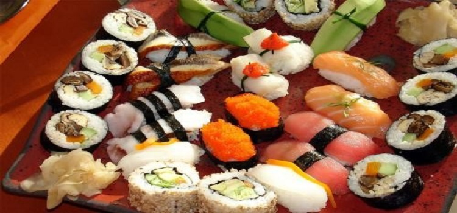

當地美食
#章魚燒#
章魚燒又名為章魚小丸子，章魚小丸子起源於日本大阪，原名“章魚燒”，其歷史要追溯到大正年代，創始人是日本著名美食家——遠藤留吉先生，素有皮酥肉嫩、味美價廉之特點，成為日本家喻戶曉的國粹小吃。
在大阪是用牙籤叉來吃，而東京是用筷子夾，在早期則是用竹串以三個一串的方式處理的。章魚燒特點：章魚茸鮮、色白、紅、黑相同，海苔味香，外觀整齊美觀。口味鹹而鮮。章魚小丸子早隨後在東南亞各地區流行起來，成為各地區的新興食品之一．章魚小丸子的成份主要是章魚，章魚燒粉，柴魚片，海苔等。

圖：章魚燒
#壽司#
壽司，一種日本料理，主要材料是用醋調味過的飯（簡稱醋飯），再加上魚肉、海鮮、蔬菜、雞蛋或其他肉類等作配料。壽司既可以作為小吃也可以作正餐，花色種類繁多。配料可以是生的、也可以是熟的，又或者是醃過的。視乎配料的不同，不同壽司的價格、檔次差距甚大。

圖：壽司
#刺身#
一種常見的日本料理，其做法是以新鮮的魚貝類生切成片，蘸醬油、山葵、味噌等調味料食用。刺身一般都是用新鮮海魚、海貝製作，是日本料理中最為清淡的菜式，所以在餐中通常為最早的一道菜。

圖：刺身
#天婦羅#
炸好的天婦羅在吃之前可以撒上些海鹽，或是沾混合醬油，高湯等的調味料。天婦羅一般會再配上磨碎的蘿蔔泥，而且在炸好時要趁熱吃。天婦羅可以和其他菜配合，作成便當，也可以和蕎麥麵條一起作早餐。
圖：天婦羅
#鰻魚飯#
鰻魚飯，一種典型的高檔日本料理，主要是將蒲燒鰻魚置於米飯上食用。在日本分為鰻魚盒飯（鰻重）與鰻魚碗飯（鰻丼），區別僅為一種用木盒盛放而另一種用瓷碗。食用前可撒上花椒粉提香。
圖：鰻魚飯
#傳統燒烤肉#
日本傳統燒烤肉類，與韓國燒烤有點相似，通常會使用炭火將肉類（通常包括和牛牛肉、牛舌、五花肉等）烤熟。日式燒肉也會使用到以日式醬油調製而成的醬汁。
圖：烤肉
#鐵板燒#
鐵板燒是日本料理中較為昂貴的一種料理方式，鐵板燒通常以上乘的材料，由富經驗的廚師在食客面前即時烹製。除了味覺滿足外，欣賞廚師的烹製食物過程也是一種特別的體驗。
圖：鐵板燒
#蘸面#
將面和濃湯分開有別於傳統麵食的吃法，面–可根據你自己的喜好選擇冷面或熱面；而濃湯–則選用優質豬脊骨、雞、乾魚等10多種材料，熬燉長達10幾小時，最後將面沾著濃湯享用，當然還配以海苔、雞蛋、叉燒等多種配料可供大家享用。
圖：蘸面
#生魚片#
以新鮮的魚貝類生切成片，蘸調味料食用的食物總稱。在中國、日本、朝鮮半島甚至歐洲等地都有類似的吃法，可說是相當國際化的一種料理。吃生魚片有低機率感染廣節裂頭絛蟲，所以生魚片一定要經過低溫冷凍或其他殺菌處理。
圖：生魚片
#拉麵#
日本拉麵自中國引進之後，由於日本地形的關係呈現自己個別地區不同的發展特色，麵條不再拉而是切成的，有醬油拉麵、豚骨拉麵、海鮮拉麵、味噌拉麵等。
圖：拉麵
覓食好去處
#一蘭拉麵（新宿中央東口店）#
Ichiran起源於九州，是博多拉麵的一種，也是當地豚骨拉麵的代表，蔡瀾強力推薦的一家拉麵店，在店裡可以經常撞見明星哦。這裡擁有“一個人也可以吃拉麵”和“專心吃麵”的拉麵文化，與眾不同的小隔間設計，你在簾子這頭吃麵，廚師在另一頭製作拉麵，私密性很好，單身人士就餐的福地。
這裡備有各種語言的菜單，上面分類詳細到拉麵的份量、軟硬程度、湯底濃度等等，十分貼心。每個人的桌子上有杯子，可以自助接水。這裡的拉麵湯頭濃郁，面身筋道，吃完拉麵一定要大口喝掉湯，碗底會有驚喜。
地址：日本東京都新宿區新宿 3-34-11
圖：一蘭拉麵
#思出橫丁#
新宿西口的Palette大廈旁，穿過新宿大高架橋的西口側，眼前出現一條林立著長屋建築聯排的酒館街。在這裡既有殘留著1940年代混沌風貌的街景，又瀰漫著溫暖人情味，這裡就是“新宿西口回憶橫丁”!
地址：日本東京新宿區西新宿1丁目
圖：思出橫丁
#鰻割烹 伊豆榮（本店）Izuei#
位於上野公園不忍池對面的已有260多年曆史的鰻魚老字號店鋪。店堂裝修考究，處處透漏著用心的痕跡。他們家的鰻魚有兩種做法，蒲燒和白燒，蒲燒就是邊燒鰻魚邊抹點特製醬汁，白燒則是放一點點鹽，不塗醬汁，燒出來的比較原味清淡。
圖：鰻割烹 伊豆榮
#惠比壽橫丁#
寫字樓林立，午餐勝地，OL的人氣街道，這就是惠比壽橫丁。掛滿紅燈籠的窄窄入口就在時尚的惠比壽街區，一到夜晚，特別光亮的“惠比壽橫丁”招牌格外引人注目。
地址：日本東京都澀谷區惠比壽1-7-4
圖：惠比壽橫丁
#口琴橫丁#
與路上行人接踵摩肩、穿梭過彷彿就要迷路似的狹窄街道後，看似充滿歡樂的店鋪就佇立在您的眼前，似乎所到之處都能聽到音樂傳來。口琴橫丁街內不僅有飲食店，還有雜貨店、沙龍、占卦等，逛一整天也不會覺得厭煩。
地址：日本東京都武蔵野市吉祥寺本町1丁目~2丁目
圖：口琴橫丁
#黑塀橫丁#
東京車站地下一番街的“黒塀橫丁”是一條很有日本特色的地下食品街。總體規模不大，總共只有12家小店，可在那裡你可以享盡日本風味的小吃。也許你不習慣吃日本料理也不要緊，那裡還有一家韓國料理和一家中國料理。
地址：日本東京都千代田區丸之內1-9-1東京站八重洲北口B1
圖：黑塀橫丁
米其林星級餐廳
#數寄屋橋次郎總店#
數寄屋橋次郎（すきやばし次郎）總店應該是東京知名度最高的一家米其林餐廳了，這裡正是著名的“壽司之神”小野二郎的大本營。現年88歲的小野二郎是現在世界上最年長的3星大廚，儘管餐廳座位只有十席，每年仍有數以萬計的饕客慕名而來，訂位需要提前一個月。
在數寄屋橋次郎總店的壽司中，小野二郎個人最推崇鮪魚壽司，認為該食材最能體現壽司精髓——不同的魚身部位脂肪含量各不相同，搭配精確控制溫度的米飯，能帶來非凡的味覺體驗。
人均消費：32000日元
地址：日本東京都中央區銀座4-2-15 塚本ビルB1F
圖：數寄屋橋次郎總店
#龍吟（Nihonryori RyuGin）#
龍吟餐廳曾在2012年被世界權威美食評論機構 The S.Pellegrino World’s 50 Best Restaurants 評為全球最佳餐廳第28位。
餐廳對於食客有頗多要求：建議食客不要塗抹味重的香水，以免影響料理味覺；龍吟還謝絕10歲以下兒童，以及身著T卹短褲和涼鞋的男性食客進入餐廳用餐，食客在用餐時不允許使用手機。
料理方面，龍吟在傳統日式料理中加入了許多新鮮元素，如分子料理等。主廚山本徵治經常飛到歐洲與當地名廚交流，將前衛元素融入自己的料理中。
人均消費：23000日元
地址：日本東京都港區六本木7-17-24 サイド六本木ビル1F
圖：龍吟餐廳美食
#神樂坂石川#
這是一家日本懷石料理的傳統名店，餐廳介紹中寫道“日本歲月，食材精粹，時間醞釀，柔軟往事，融為一場美妙的味覺體驗”。這裡的蟹料理尤為美味，松葉蟹是一絕。
人均消費：25000日元
地址：日本東京都新宿區神楽坂5-37 高村ビル 1F
圖：神樂坂石川美食
#臼杵河豚山田屋#
這是日本米其林餐廳中少有的以河豚料理聞名的餐廳，用來製作河豚料理的食材全部取自野生虎豚，口感肉質十足。
山田屋在處理河豚料理時，會先將河豚切成非常透明的菊瓣形極薄切片，再放入盤中由外向內疊層排成菊花的形狀，食客用筷子由外層向內層一層一層地剝著吃。由於野生河豚的捕獲量逐年減少，目前正處於供不應求的狀況，所以經常需要提前數月定位。
人均消費：21000日元
地址：日本東京都港區西麻布4-11-14 FLEG 西麻布VIERGE 地階A
圖：臼杵河豚山田屋美食
#青山Esaki#
青山Esaki（えさき）的店面位於神宮前的一條小巷中，但酒香不怕巷子深，每晚所有16個座位和兩個包間都座無虛席。這裡的招牌是有機野菜，提供來自日本各地的日常蔬菜，突出了日本料理在處理食物上的精細。
人均消費：10500日元
地址：日本東京都涉谷區神宮前3-39-9 ヒルズ青山B1F
圖：青山Esaki美食
#Quintessence#
從2007年起連續7年被評為“米其林三星”的神級法國料理，客人至少要提前兩個月才能預訂到。
人均消費：18900日元
地址：日本東京都品川區北品川6-7-29 ガーデンシティ品川御殿山 1F
圖：Quintessence美食
#麻布幸村#
店主兼主廚幸村最為人所知的是“間人蟹”，主要用松葉蟹和長腳蟹料理，被譽為“一輩子一定要吃一次”的蟹料理。
人均消費：25000日元
地址：日本東京都港區十番街1-5-5湯建麻布十番大廈3層
圖：麻布幸村
#Joel Robuchon#
可謂是日本最為華麗的餐廳——Joel Robuchon總店設在巴黎，唯一一家分店便設在日本。老闆斥巨資買下了東京一座法式城堡，將內部佈置得富麗堂皇。食材從全球空運而來，整個法式晚餐共12道，很多菜品中會配上黑松露。
人均消費：36000日元
地址：日本東京都目黑區三田1-13-1惠比壽gardenplace2F
圖：Joel Robuchon
#水穀壽司#
水穀壽司（鮨水穀よしたけ）在時令選材方面尤為講究，主廚水穀先生在圈中是出了名的獨具慧眼，也有著自己的特別進貨渠道，能讓客人嚐到最新鮮的美食。
人均消費：23000日元
地址：日本東京都中央區銀座8-7-19 すずりゅうビル3F
圖：水穀壽司
#虎白#
今年唯一新晉的三星餐廳，由名廚石川秀樹的得意弟子小泉功二掌廚，不僅限於日本菜，還會用來自世界各國的食材創作創意料理，特別是日式生雞蛋蓋飯和西洋黑松露結合的逸品。
人均消費：15000日元
地址：日本東京都新宿區神楽坂3-4